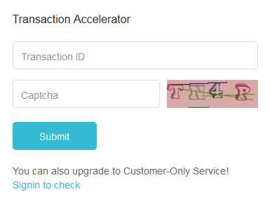

Если у вас не проходит транзакция по причине того, что была указана низкая комиссия (а то и нулевая комиссия), то нижеприведенный текст должен вам помочь.
Последнее время комиссии за включение транзакций в блок сильно возросли. Проблема масштабируемости сети не решается, а количество желающих провести транзакцию растет. От этого происходит рост мемпула и комисиий.
Еще месяц назад, с трудом, за неделю-две, но могла пройти транзакция с 30 сатоши за 1 байт, а транзакции со стандартной комиссией 120 сатоши за байт проходили более менее быстро, от нескольких часов до нескольких дней
Последнее время онлайн-сервис blockchain.info дважды поднимал стандартную комиссию, сначала до 240 сат, сейчас до 300 сатоши. Но это не панацея. Количество желающих от этого серьезно не уменьшается, мемпул растет как на дрожжах. Сначала до 50 МБ, потом до 100 МБ, теперь уже 150 МБ. и это не предел.
Поэтому появился сервис "проталкивания" транзакций - viaBTC
Теперь по делу.
Для проталкивания транзакции необходимо выполнить следующее:
1. Синхронизировать часы своего компьютера через сервер синхронизации. Это делается в Win двойным кликом по иконке часов.
2. Сервер viaBTC принимает неподтвержденные транзакции для включения не после нахождения блока, а в начале каждного часа, для этого и нужна синхронизация, так как у некоторых часы компа могут бежать или отставать минут на пять
3. Зайти за 10 мин до начала нового часа по URL: https://www.viabtc.com/tools/txaccelerator/. Будет открыта следующая форма:

4. Вбить свою транзакцию и далее, выбрать самую простую капчу нажатием мышки. Выбирайте самую простую, где только одни заглавные американские буквы.
5. И последнее. Ждите начала нового часа и в промежуток 0 мин 1 секунда до 0 мин 30 сек нажимайте "Submit"
Транзакция подтвердится, сервер вам напишет, "Акселерейшн саксидид"